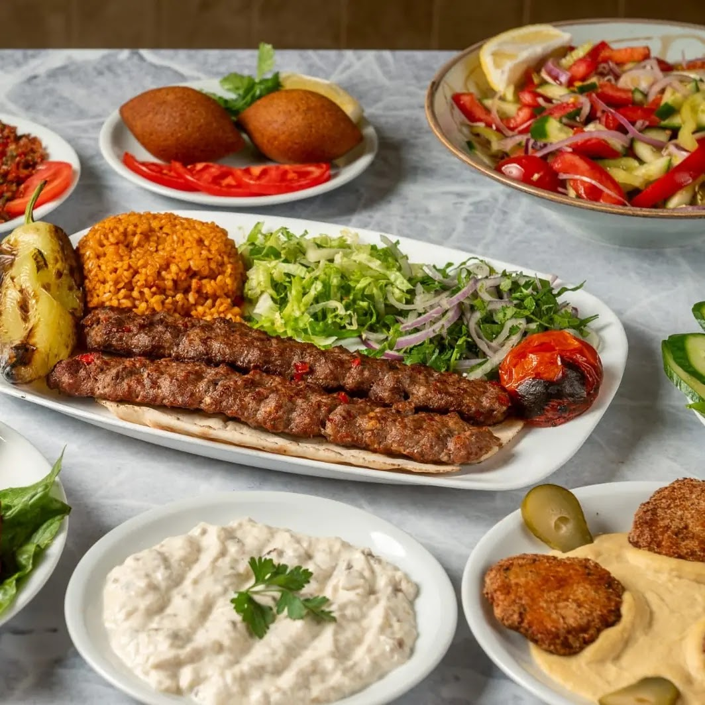
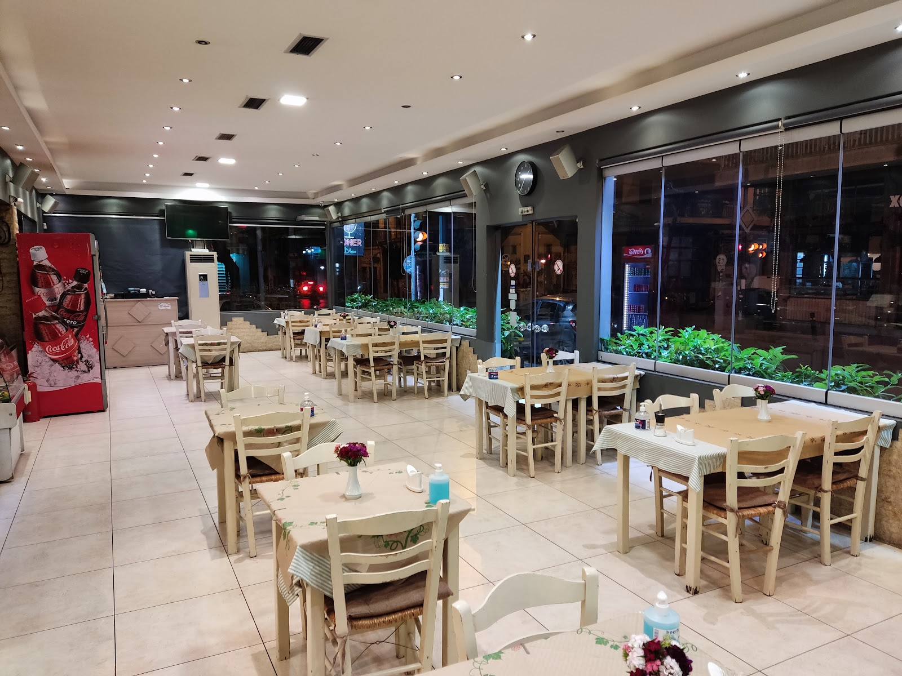
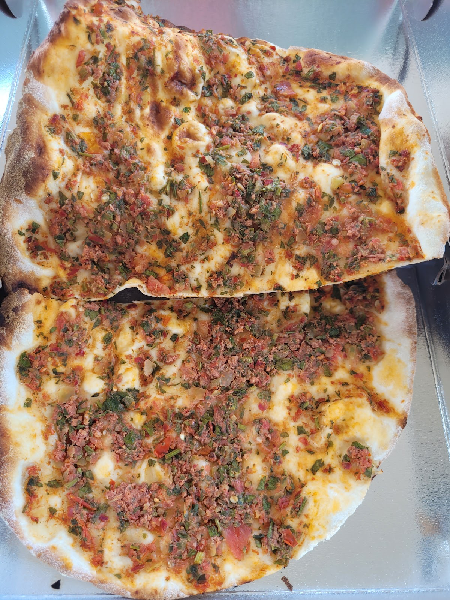
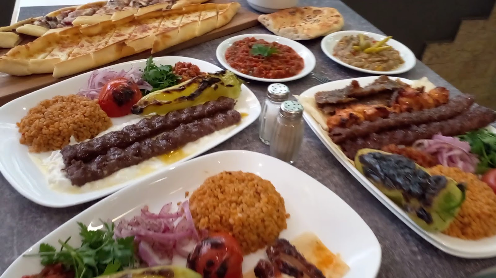
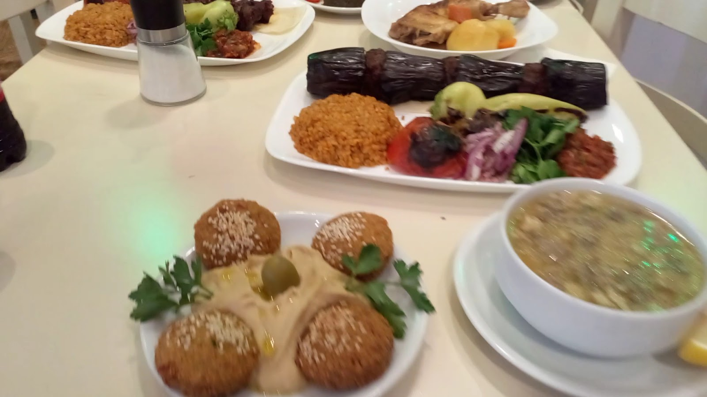
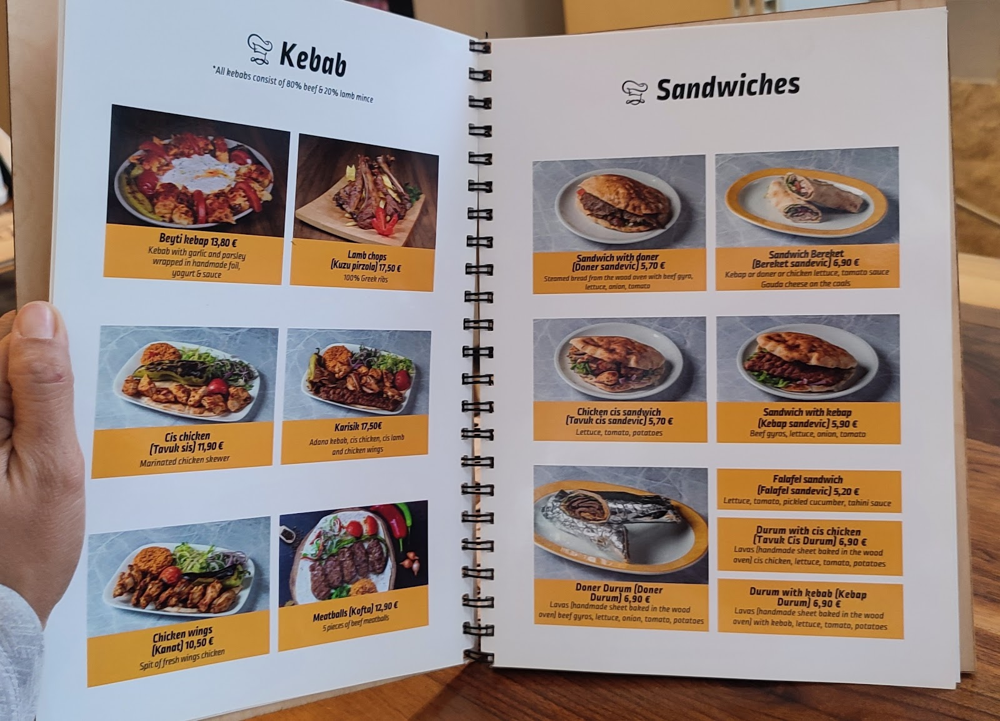
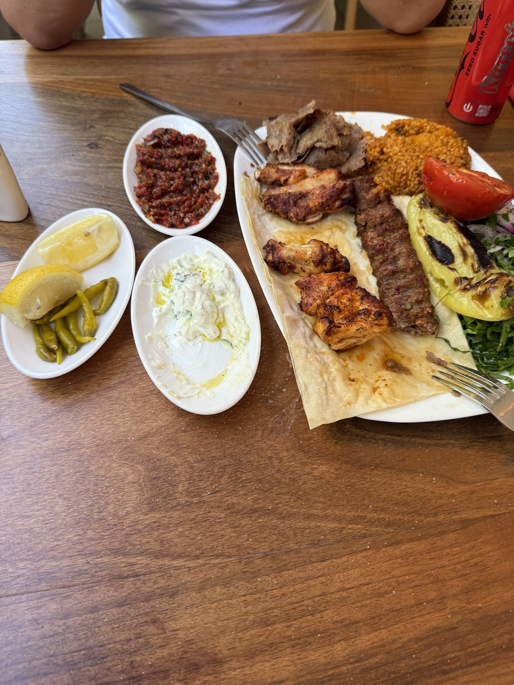
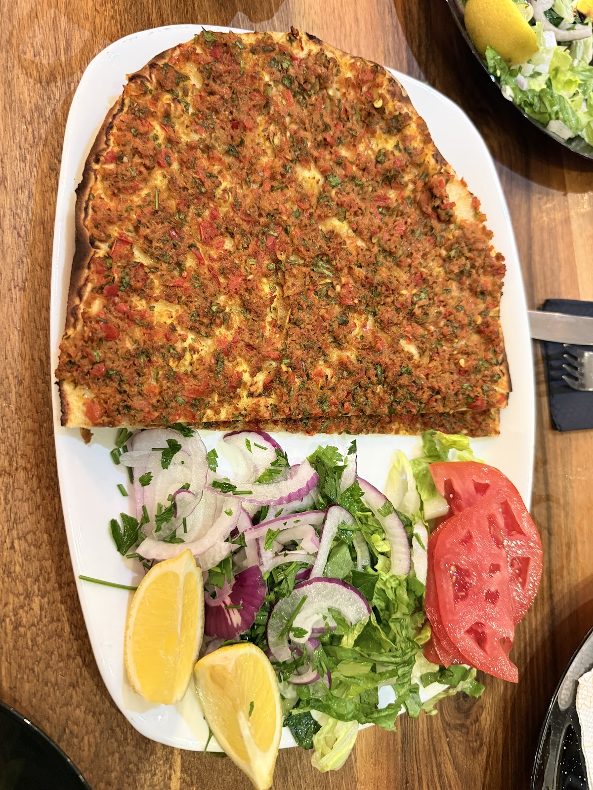

Χαλάλ κουζίνα · Ιουλιανού 81Helal mutfak · Ioulianou 81
Κεμπάπ από 80% μοσχάρι και 20% αρνί, λαχματζούν και ντουρούμ σε λαβάς ψημένο στον ξυλόφουρνο.%80 dana ve %20 kuzu kıymadan kebaplar, lahmacun ve odun fırınında pişen lavaşta dürüm.

Το μαγαζίMekân
Το Green Kebab δουλεύει λίγο πιο κάτω από την Πλατεία Βικτωρίας και κρατά σταθερά την ίδια γραμμή: τούρκικη σχάρα, χαλάλ κρέας, καθαρά πιάτα και σέρβις χωρίς φασαρία.Green Kebab, Viktoria Meydanı'nın hemen aşağısında çalışıyor ve aynı çizgiyi koruyor: Türk mangalı, helal et, temiz tabaklar ve gürültüsüz servis.
Στον κατάλογο υπάρχουν και χορτοφαγικές, vegan και gluten-free επιλογές — και το φαλάφελ σάντουιτς για όσους δεν τρώνε κρέας.Menüde vejetaryen, vegan ve glutensiz seçenekler de var — ve et yemeyenler için falafel sandeviç.

Στη σχάραMangalda

Λεπτό, τραγανό, ψημένο στη στιγμή — με λεμόνι και μαϊντανό.İnce, çıtır, anında pişmiş — limon ve maydanozla.

80% μοσχάρι, 20% αρνί — όπως γράφει και ο κατάλογός τους.%80 dana, %20 kuzu — menülerinde yazdığı gibi.

Χούμους, ταμπουλέ και ζεστά λαβάς που έρχονται στην αρχή.Humus, tabule ve başta gelen sıcak lavaşlar.
Από τον κατάλογοMenüden
ΚεμπάπKebap
Σάντουιτς & ντουρούμSandeviç & dürüm
Όλα τα κεμπάπ: 80% μοσχάρι και 20% αρνί — όπως αναγράφεται στον κατάλογο του καταστήματος.Tüm kebaplar %80 dana ve %20 kuzu kıymadan yapılır — menüde yazdığı gibi.

Στο τραπέζιMasada


Κριτικές GoogleGoogle değerlendirmeleri
Τέλειο kebab, λαχματζούν κι άλλα ψητά σε πολύ καλές τιμές!
Ένα τιμιότατο τούρκικο εστιατόριο, που σε μεταφέρει σε γειτονιά της Πόλης. Σαφή, καλοφτιαγμένα πιάτα, αθόρυβη αλλά αποτελεσματική εξυπηρέτηση.
ΩράριοÇalışma saatleri
| ΔευτέραPazartesi | 12:30–23:00 |
| ΤρίτηSalı | 12:30–22:30 |
| ΤετάρτηÇarşamba | 12:30–22:30 |
| ΠέμπτηPerşembe | 12:30–22:30 |
| ΠαρασκευήCuma | 12:30–22:30 |
| ΣάββατοCumartesi | 12:30–22:30 |
| ΚυριακήPazar | ΚλειστάKapalı |
Πού είμαστεNeredeyiz
Ιουλιανού 81, Αθήνα 104 39
Κοντά στην Πλατεία ΒικτωρίαςViktoria Meydanı'na yakın
+30 21 0821 0990